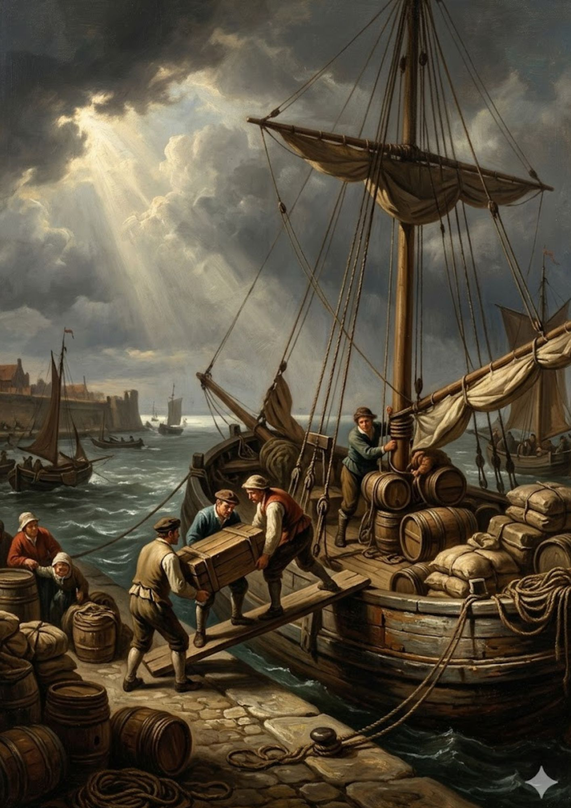
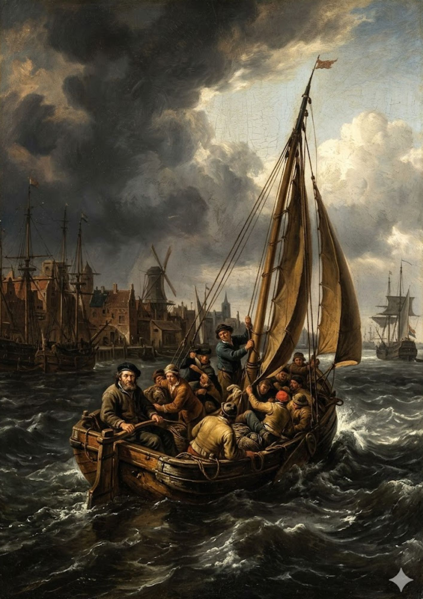
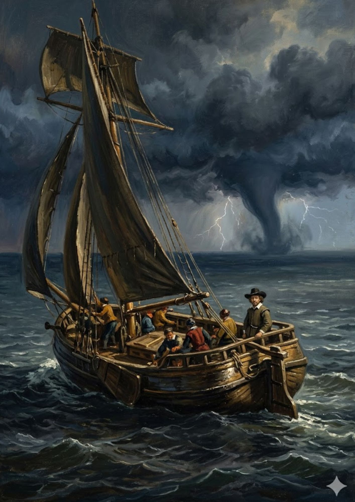
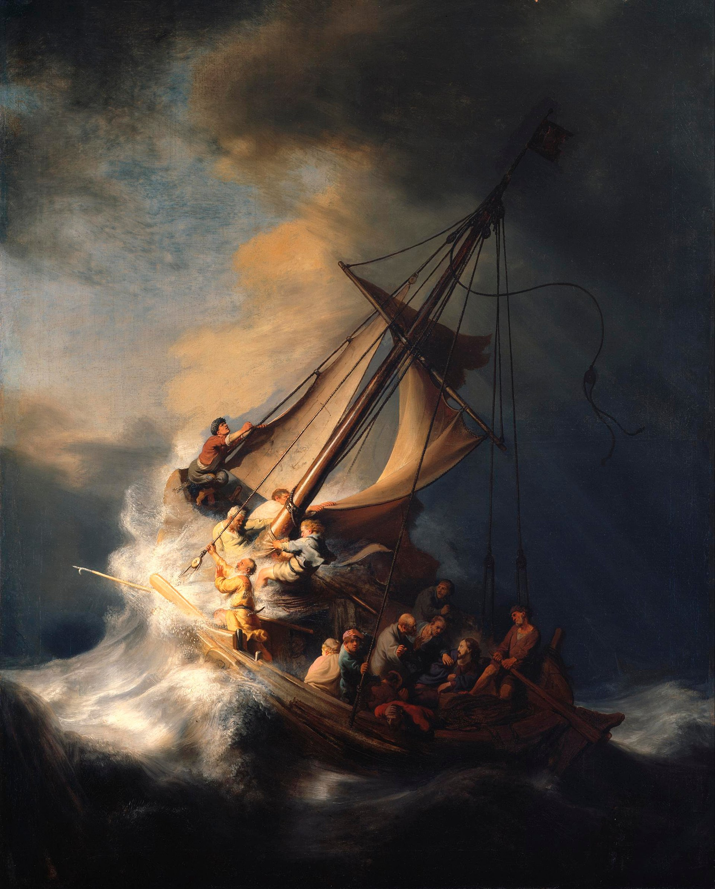
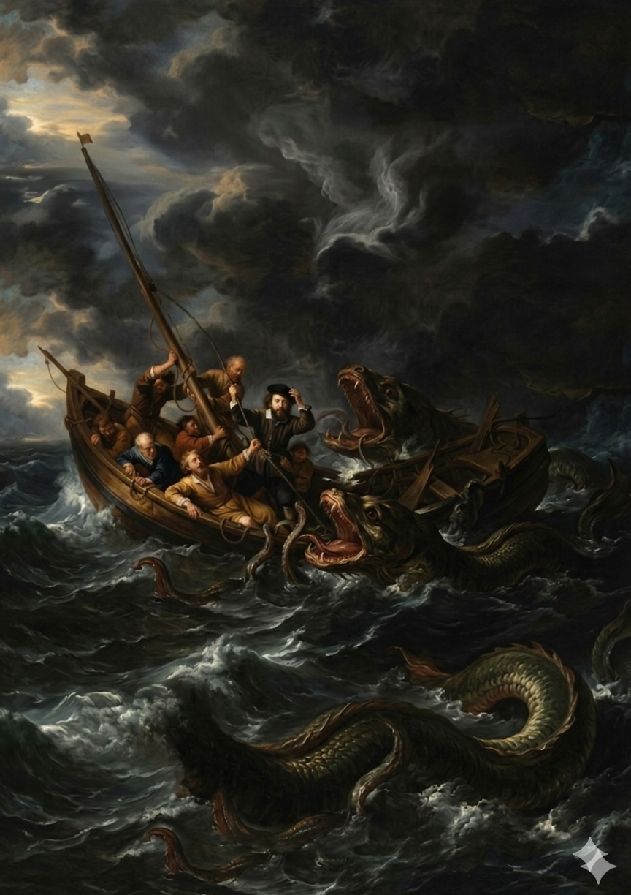
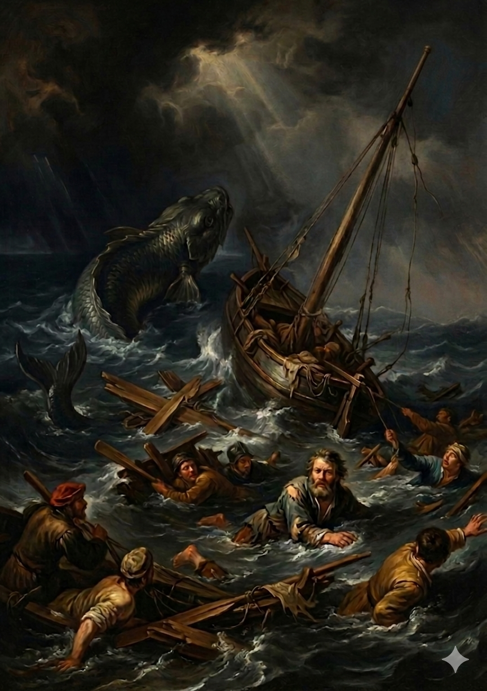

Il molo odorava di catrame e salsedine. I Brochahchi caricavano barili e casse sulla robusta imbarcazione di legno, mentre il loro leader — austero, abiti scuri, gorgiera inamidata — controllava ogni dettaglio con occhio severo. Quindici anime che stavano mettendo tutto quello che avevano su quella barca. Il cielo sopra il porto era già inquieto, le nuvole gonfie e scure. Ma nessuno sembrava volerlo guardare.


Con uno spintone deciso, la barca si staccò dal molo. Le vecchie case e il mulino a vento si allontanarono lentamente, rimpicciolendo fino a diventare sagome. I Brochahchi si sistemarono tra le ceste e i bagagli, stretti gli uni agli altri. Due uomini robusti affondavano i remi nell'acqua grigia con ritmo cadenzato. Dietro di loro, un varco tra le nuvole lasciò passare un raggio di luce — come una benedizione, o forse un ultimo saluto.
L'orizzonte cambiò in pochi minuti. Le nuvole si addensarono fino a cancellare il cielo, e in lontananza una tromba marina toccava l'acqua come un dito enorme e nero. I fulmini squarciavano il buio a intermittenza. Il leader rimase in piedi a poppa, immobile, mentre attorno a lui la ciurma cominciava a capire che non c'era rotta per aggirare quello che stava arrivando.


La tempesta non chiede permesso. Strappa le vele, inclina lo scafo, getta gli uomini gli uni sugli altri. C'è chi si aggrappa alle corde con le ultime forze, chi prega a occhi chiusi, chi non riesce a fare nemmeno quello. Il mare non distingue tra il coraggioso e il codardo — vuole tutti. E in mezzo a quel caos c'è una figura che non lotta, non urla, non si aggrappa a nulla. Guarda la tempesta come se la conoscesse da sempre. Come se sapesse che certe cose non si affrontano con le mani, ma con qualcosa che le mani non riescono a toccare.
Il mare non perdona. E non dimentica. Sotto la superficie nera, qualcosa si muoveva da quando erano partiti — paziente, silenzioso, enorme. Aspettava il momento giusto. Quando la tempesta aveva già tolto le forze e la speranza, quando le mani stringevano le corde solo per abitudine, quando nessuno aveva più occhi per guardare in basso — solo allora emerse. Una creatura enorme avvolse lo scafo con le sue spire, il legno cominciò a scricchiolare e a cedere. Il panico si diffuse in un istante — urla, mani che cercavano appigli, occhi spalancati nell'oscurità. Alcuni si paralizzarono, certi che quello sarebbe stato il loro ultimo respiro, in attesa di sentire quelle fauci chiudersi. La bestia si prese tutto il tempo del mondo. Come se sapesse che non c'era nessun posto dove scappare.


Poi, come era venuta, la bestia si immerse di nuovo negli abissi. Lasciando dietro di sé solo il silenzio e una chiglia squarciata. La barca affondò in pochi minuti. I Brochahchi si trovarono in acqua, circondati da assi di legno e relitti che galleggiavano come resti di un sogno. Qualcuno gridava, qualcuno nuotava, qualcuno si aggrappava a ciò che trovava. Ma nessuno mollò l'altro. Tra le onde e il buio, quella comunità di quindici anime rimase unita — non per forza, ma per scelta. E fu quella scelta a tenerli a galla. Perché il mare prende le barche, i bagagli, le rotte pianificate. Prende tutto quello che si può costruire con le mani. Ma non riesce a prendere quello che tiene insieme le persone — quella cosa silenziosa e ostinata che non ha un nome preciso, ma che si vede benissimo quando tutto il resto è già andato a fondo.
Ispirato a Cristo nella tempesta sul mare di Galilea di Rembrandt van Rijn, 1633.
Olio su tela, ubicazione sconosciuta dopo il furto dall'Isabella Stewart Gardner Museum di Boston.
Dentro il Quadro · Progetto di scrittura creativa
← Torna alla galleria